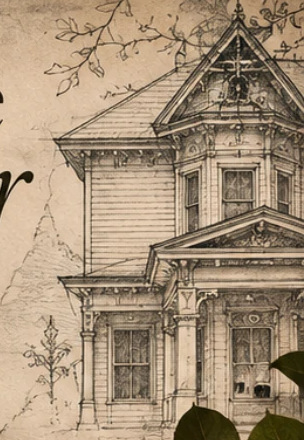

AN ATELIER FOR OLD HOMES
Preserve theCharacter
THOUGHTFUL RENOVATION
FOR HOMES WITH A STORY.
FEATURED RESTORATION
The Maplewood
Residence
A 1908 Craftsman, thoughtfully
restored for modern living.
A CONSIDERED APPROACH
Not new again.
Beautifully enduring.
A remarkable old home deserves more than a fresh coat of paint. It deserves someone who listens to its history, understands its craftsmanship, and imagines what comes next.
TELL US ABOUT YOUR HOMEListen to the house
We study the original architecture, its materials, the way light moves through the rooms, and the stories worth preserving.
Restore with intention
We respect the old while thoughtfully introducing modern comfort, careful craftsmanship, and a sense of ease.
Make room for life
The result should feel both familiar and new. A home with its character intact, ready for another century of living.
FROM THE RESTORATION ARCHIVE
Stories in the Details
NOTES FROM THE STUDIO
The Studio Journal
Field notes on the art of restoration: materials that age gracefully, houses with histories, and the small decisions that make a lasting difference.
OUR POINT OF VIEW
Stewards of the story.
The Renovation Atelier is devoted to the quiet art of bringing old homes forward. With curiosity, restraint, and respect for the original architecture, every project begins by discovering what makes a house unmistakably itself.
Its guiding philosophy is simple: preserve what makes a place extraordinary, and thoughtfully improve what makes it livable.
LET'S TALK ABOUT YOUR PROJECTTHE NEXT CHAPTER
Every house has a story.
Tell us yours.
Tell us a little about the home, the history that drew you to it, and what you hope to create.